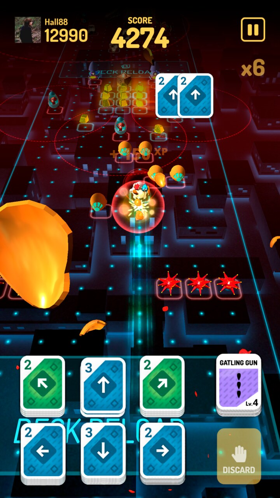
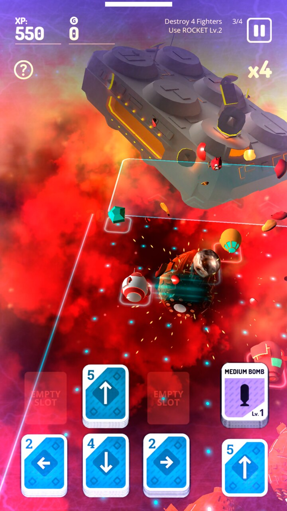
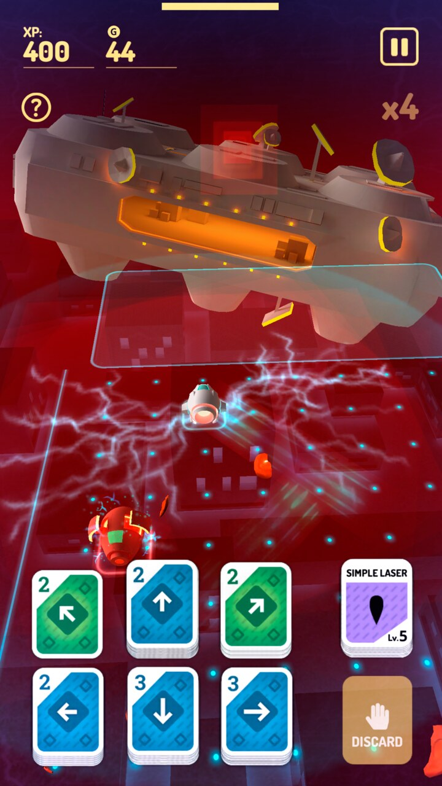
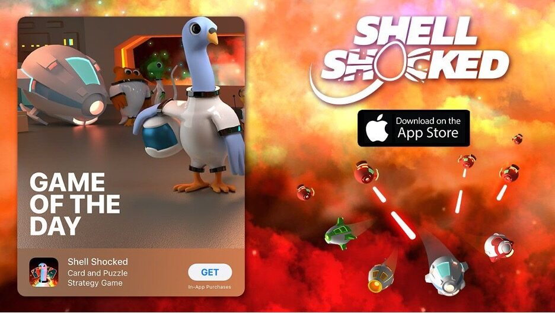
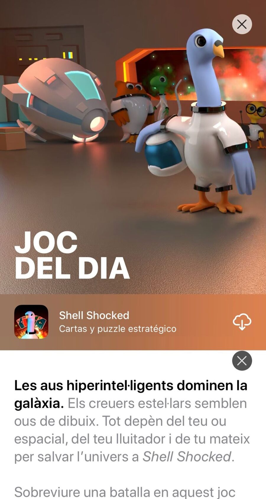

Shell Shocked
Juego de cartas y puzle estratégico de ciencia ficción: guía una nave-óvulo por una gigantesca cuadrícula combinando cartas, esquivando enemigos y llegando a la zona segura. Desarrollado en Unity para iOS y Android.
Ficha rápida
| Campo | Valor |
|---|---|
| Rol | Desarrollador principal (Unity, iOS/Android) |
| Estudio | Dabadu Games |
| Editor | Rogue Games |
| Plataformas | iOS, Android |
| Lanzamiento | 2020 |
| Precio | Gratis con anuncios y compras integradas |
| Idiomas | 6 |
| Género | Cartas / puzle estratégico (sci-fi) |
| Estado | Ya no disponible |
Destacados
- Más de 145.000 jugadores.
- "Game of the Day" y "Joc del dia" de Apple (mayo y junio de 2020).
- Destacado por Apple en tres recopilaciones en marzo de 2020: "Els nostres preferits: cinc jocs nous que ens encanten", "A vista de pájaro" y "Els jocs a què juguem".
Imágenes
Jugabilidad (capturas oficiales de la App Store)



Apple — "Game of the Day" (mayo de 2020)

Shell Shocked · Games — Apple's "Game of the Day"
Hyperintelligent birds rule the galaxy. Star cruisers look like egg cartons. It's up to you — and your soft-boiled space fighter — to save the universe.
Surviving a skirmish in this sci-fi puzzle game comes down to timing. Each level is a giant grid and your movement is based on card combos. Play cards to fly across the map until you make it to the safe zone — or run out of moves. Every mission's a minefield, so make sure each move puts you in a clear lane.
Looking for style points? Smash enemy ships to smithereens with a well-timed boost! Draw the right cards and your egg ship will launch weapons, blitz through blockades, or activate special items (like auto lasers and force fields) that can turn the tide of battle. But be careful! Stop your card combo in the wrong place — or pause at the wrong time — and your egg ship could be fried by a barrage of missiles.
Don't let the threat of becoming breakfast hold you back. A lengthy story mode doles out new characters and powerful cards. Get cracking and show those bird-brained baddies a thing or two!
Apple — "Joc del dia" (junio de 2020)

Shell Shocked · Games — "Joc del dia" d'Apple
Les aus hiperintel·ligents dominen la galàxia. Els creuers estel·lars semblen ous de cartró. Tot depèn del teu ou espacial, del seu lluitador i de tu per salvar l'univers.
Sobreviure a una batalla en aquest joc de trencaclosques de ciència-ficció depèn del moment. Cada nivell és una quadrícula gegant i el teu moviment es basa en combinacions de cartes. Juga cartes per volar pel mapa fins a arribar a la zona segura, o et quedaràs sense moviments. Cada missió és un camp de mines, així que assegura't que cada moviment et deixi un carril lliure.
Busques punts d'estil? Esclafa les naus enemigues amb un bon atac! Si robes les cartes correctes, el teu ou espacial llançarà armes, travessarà bloquejos o activarà objectes especials (com ara làsers automàtics i camps de força) que poden capgirar la batalla. Però ves amb compte: si atures la combinació en el lloc equivocat, el teu ou pot acabar fregit per una pluja de míssils.
No deixis que l'amenaça de convertir-te en l'esmorzar t'aturi. Un mode d'història extens reparteix personatges nous i cartes molt poderoses. Posa el fil a l'agulla i mostra als dolents qui val més!
Prensa
Gamezebo — 11 de marzo de 2020 — "Shell Shocked Review – An Egg-cellent Mix of Genres" — 70/100
"What happens when you cross a card-battler with an arcade shooter, throw in a mix of turn-based and real-time strategy and stuff it full of puns about eggs? Well you end up with something like Shell Shocked… There's a meaty hunk of game here that requires some serious thinking if you want to succeed."
Notas
- Descripción de tienda: "Hyperintelligent birds rule the galaxy… save the universe in Shell Shocked".
- El juego se llamaba originalmente Space Egg Ships —
todavía se ve en el package id de Android,
com.dabadu.spaceeggships.